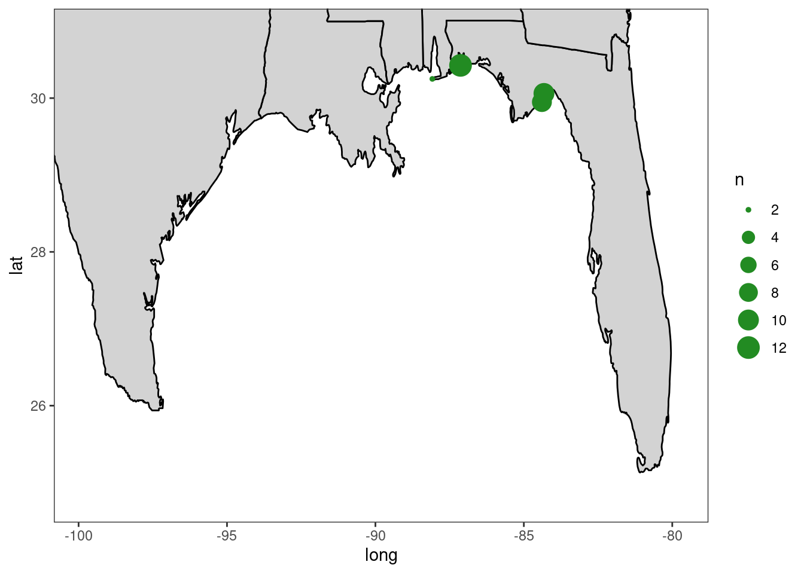
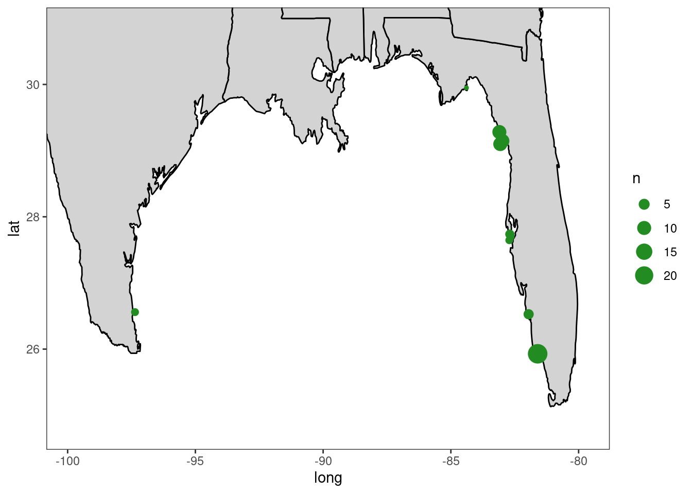

3 Genetic Groups
3.1 Objective: Assign individuals to genetic groups
Previous research has suggested that there are four different genetic clusters in the gulf: STX, nGOM, nFL (northern Florida), and genFL (general Florida).
The objective of this section is to use the genotype data from the 600K SNP array to assign oysters to genetic groups.
3.2 Data Subsetting
Read in SNP data – combined_filtered data set
row names are individuals
columns are loci
cells are genotypes (11,12,21,22)
combined_filtered <-read.table("data/derived/combined_filtered.txt",header=TRUE)Read in Individual data – sample_info_full data set
first column is individuals
52 other columns of descriptive information on individuals
sample_info_full <-read.table("data/derived/sample_info_full.txt",header=TRUE)Produce list of individuals that are from selected lines and take the individuals from the selected lines out of the SNP data set
#Produce a list of individuals that are from selected lines (O'Boy or Auburn selected lines)
selected <- sample_info_full %>%
filter(Collection_data %in% c("Auburn selected line 1", "Auburn selected line 2", "O'Boy selected line")) %>%
pull(Sample)
#Take the individuals from selected lines out of the SNP data set
genotypes <- combined_filtered %>%
filter(!row.names(.) %in% selected)Subset the SNP data set by selecting a random 20K SNPs
- should speed up analysis and be just as effective for genetic group assignment
set.seed(54)
combined_filtered_20K <- genotypes %>%
select(sample(seq_len(ncol(.)), size = 20000,replace=FALSE))3.3 Kmeans - All Wild Individuals
Prior groups need to be defined for DAPC
identify groups initially using k-means clustering
k-means is a clustering algorithm which finds a given number of groups that maximizes variation among groups
k-means is run sequentially with increasing number of ks, and solutions can be compared using BIC
ideally, lowest BIC is best clustering solution
k-means can be done much faster on the PCA data than the raw data
transform the data using PCA with the find.clusters function, asks the user to specify the number of retained PCS interactively
First, Convert SNP data to a genind object
#convert SNP data to genind
gen1 <- df2genind(combined_filtered_20K, ncode = 1, sep = "", NA.char = NA, ploidy = 2)
gen1## /// GENIND OBJECT /////////
##
## // 380 individuals; 20,000 loci; 38,841 alleles; size: 66.8 Mb
##
## // Basic content
## @tab: 380 x 38841 matrix of allele counts
## @loc.n.all: number of alleles per locus (range: 1-2)
## @loc.fac: locus factor for the 38841 columns of @tab
## @all.names: list of allele names for each locus
## @ploidy: ploidy of each individual (range: 2-2)
## @type: codom
## @call: df2genind(X = combined_filtered_20K, sep = "", ncode = 1, NA.char = NA,
## ploidy = 2)
##
## // Optional content
## - empty -Use find.clusters to identify groups via k-means clustering
grp <- find.clusters(gen1, n.pca = 500, choose = FALSE, max.n.clust = 5) # retain 500 PCs, retain 3 clusters
plot(grp$Kstat, type="o", xlab="number of clusters (K)", ylab="BIC",
col="blue", main="Detection based on BIC")
Looks like there are three or four groups
Choose three clusters
grp <- find.clusters(gen1, n.pca = 500, n.clust = 3)
grp$size## [1] 62 98 220Use the k-means clustering and the sample metadata to create a tibble that contains the 380 individuals that are wild collected and 54 columns of descriptive information, including the kmeans group assignment “k_group”
# Returns data frame of individuals and their k-means assignment
x <- as_tibble(grp$grp,rownames=NA) %>%
rownames_to_column(.,var="Sample") %>%
rename(k_group = value)Make a data set that only has wild individuals
sample_info_wild <- sample_info_full %>%
filter(! Collection_data %in% c("Auburn selected line 1", "Auburn selected line 2", "O'Boy selected line"))Add a column of k_means group to data on individuals
sample_data <- sample_info_wild %>%
left_join(., x,
by = "Sample")3.4 PCA - K groups
Use PCAs to confirm there are 3 groups as identified by k means
#identify each individual to each k group in the genind
kg<-sample_data %>%
select(Sample,k_group)
# Assign strata to genind
strata(gen1) <- kg[match(indNames(gen1),sample_data$Sample),]
# set pop to GG/STX
setPop(gen1) <- ~k_group#Check PCA eigenvalues
x<- scaleGen(gen1, NA.method = "mean")
# Plot a PCA
pca <- dudi.pca(x,cent=FALSE,scale=FALSE,scannf=FALSE,nf=4)
#plot1
barplot(pca$eig[1:50],main="All_Samples_PCA_eigenvalues", col=heat.colors(50))
#extract PCs for individuals
PC_ind <- PC.ind(pca)
eig <- eigenvalues(pca)
#associate metadata with individuals
PC_ind <- PC_ind %>% rename(Sample=Sample_ID) %>%
left_join(.,sample_data,by="Sample")
pctot12 <- ggplot(PC_ind, aes(x = Axis1, y = Axis2, color = k_group)) +
#geom_text(size=3)+
geom_point(alpha = 0.75, size = 2) +
labs(x = paste("PC1:", round(eig[1, 3], digits = 3), "%"),
y = paste("PC2:", round(eig[2, 3], digits = 3), "%"))+
scale_color_hue(direction = -1)+
ggtitle("All_Samples_Axis2vs.Axis1")
pctot12
Figure 3.1: All Individuals PC1 vs. PC2
Re-run PCA without k_group 1 (very different from rest)
#remove k_group 1
gen2 <- gen1[!gen1@strata$k_group %in% 1]#Check PCA eigenvalues
x<- scaleGen(gen2, NA.method = "mean")
# Plot a PCA
pca <- dudi.pca(x,cent=FALSE,scale=FALSE,scannf=FALSE,nf=4)
#plot1
barplot(pca$eig[1:50],main="All_Samples_PCA_eigenvalues", col=heat.colors(50))
#extract PCs for individuals
PC_ind <- PC.ind(pca)
eig <- eigenvalues(pca)
#associate metadata with individuals
PC_ind <- PC_ind %>% rename(Sample=Sample_ID) %>%
left_join(.,sample_data,by="Sample")
pctot12 <- ggplot(PC_ind, aes(x = Axis1, y = Axis2, color = k_group)) +
#geom_text(size=3)+
geom_point(alpha = 0.75, size = 2) +
labs(x = paste("PC1:", round(eig[1, 3], digits = 3), "%"),
y = paste("PC2:", round(eig[2, 3], digits = 3), "%"))+
scale_color_hue(direction = -1)+
ggtitle("All_Samples_Axis2vs.Axis1")
pctot12
Figure 3.2: All Individuals PC1 vs. PC2
Looks like at least three groups in the PCA above
Worth evaluating the PCA if choosing four groups
3.5 Kmeans and PCA with four groups
#choose four clusters
grp <- find.clusters(gen1, n.pca = 500, n.clust = 4)
grp$size## [1] 62 33 68 217Use the k-means clustering and the sample metadata to create a tibble that contains the 380 individuals that are wild collected and 54 columns of descriptive information, including the kmeans group assignment “k_group”
# Returns data frame of individuals and their k-means assignment
x <- as_tibble(grp$grp,rownames=NA) %>%
rownames_to_column(.,var="Sample") %>%
rename(k_group = value)# add a column of k_means group to data on individuals
sample_data <- sample_info_wild %>%
left_join(., x,
by = "Sample")3.6 PCA - Four K groups
Use PCAs to confirm there are 4 groups
#identify each individual to each k group in the genind
kg<-sample_data %>%
select(Sample,k_group)
# Assign strata to genind
strata(gen1) <- kg[match(indNames(gen1),sample_data$Sample),]
# set pop to GG/STX
setPop(gen1) <- ~k_group#Check PCA eigenvalues
x<- scaleGen(gen1, NA.method = "mean")
# Plot a PCA
pca <- dudi.pca(x,cent=FALSE,scale=FALSE,scannf=FALSE,nf=4)
#plot1
barplot(pca$eig[1:50],main="All_Samples_PCA_eigenvalues", col=heat.colors(50))
#extract PCs for individuals
PC_ind <- PC.ind(pca)
eig <- eigenvalues(pca)
#associate metadata with individuals
PC_ind <- PC_ind %>% rename(Sample=Sample_ID) %>%
left_join(.,sample_data,by="Sample")
pctot12 <- ggplot(PC_ind, aes(x = Axis1, y = Axis2, color = k_group)) +
#geom_text(size=3)+
geom_point(alpha = 0.75, size = 2) +
labs(x = paste("PC1:", round(eig[1, 3], digits = 3), "%"),
y = paste("PC2:", round(eig[2, 3], digits = 3), "%"))+
scale_color_hue(direction = -1)+
ggtitle("All_Samples_Axis2vs.Axis1")
pctot12
Figure 3.3: All Individuals PC1 vs. PC2
I would say there are four groups based on the K means + PCA. Proceed with these four.
3.7 Assign Genetic Groups
First, investigate each k_group and give it a common name based on geographic origin of the majority of the individuals
#K_group1
sample_data %>%
filter(k_group == 1) %>%
count(SampleOrigin,Geographic_state,Geographic_location, Geographic_code)## SampleOrigin Geographic_state Geographic_location Geographic_code n
## 1 South-Texas Texas Corpus Christi Bay CCTX 6
## 2 South-Texas Texas Port Mansfield PMTX 17
## 3 South-Texas Texas Upper Laguna Madre ULTX 39MainStates <- map_data("state")
ggplot()+
geom_polygon(data=MainStates,aes(x=long,y=lat,group=group),fill="lightgray", color="black") +
theme_bw()+
theme(panel.grid.major = element_blank())+
theme(panel.grid.minor = element_blank())+
coord_cartesian(xlim=c(-99.830000,-79.783711), ylim = c(24.783218,30.858945)) +
geom_point(data = sample_data %>%
mutate(latitude2 = round(latitude,3)) %>%
mutate(longitude2 = round(longitude,3)) %>%
count(k_group,Geographic_code,longitude2,latitude2) %>%
mutate_at(c('longitude2', 'latitude2'), as.numeric) %>%
filter(k_group == 1),
#counts for proportional representation
aes(y = latitude2, x = longitude2, group=Geographic_code,size = n), colour= "forestgreen",
stroke=0.5) k_group 1 is south texas
k_group 1 is south texas
#k group 2
sample_data %>%
filter(k_group == 2) %>%
count(SampleOrigin,Geographic_state,Geographic_location, Geographic_code)## SampleOrigin Geographic_state Geographic_location Geographic_code n
## 1 Broodstock Alabama Alligator Lake ALAL 2
## 2 Broodstock Florida Alligator Harbor AHFL 9
## 3 Broodstock Florida Oyster Bay OBFL 10
## 4 Broodstock Florida Pensacola Bay PBFL 12ggplot()+
geom_polygon(data=MainStates,aes(x=long,y=lat,group=group),fill="lightgray", color="black") +
theme_bw()+
theme(panel.grid.major = element_blank())+
theme(panel.grid.minor = element_blank())+
coord_cartesian(xlim=c(-99.830000,-79.783711), ylim = c(24.783218,30.858945)) +
geom_point(data = sample_data %>%
mutate(latitude2 = round(latitude,3)) %>%
mutate(longitude2 = round(longitude,3)) %>%
count(k_group,Geographic_code,longitude2,latitude2) %>%
mutate_at(c('longitude2', 'latitude2'), as.numeric) %>%
filter(k_group == 2),
#counts for proportional representation
aes(y = latitude2, x = longitude2, group=Geographic_code,size = n), colour= "forestgreen",
stroke=0.5) k_group 2 is north florida (nfl)
sample_data %>%
filter(k_group == 3) %>%
count(SampleOrigin,Geographic_state,Geographic_location,Geographic_code)## SampleOrigin Geographic_state Geographic_location Geographic_code n
## 1 Backwater-Bay-FL Florida Backwater Bay BWBFL 24
## 2 Broodstock Florida Alligator Harbor AHFL 1
## 3 Broodstock Florida Corrigan Reef CRFL 10
## 4 Broodstock Florida Seahorse Key SKFL 10
## 5 Broodstock Florida Suwannee River LRFL 10
## 6 South-Florida Florida Boca Ciega Bay Aquatic Preserve BCFL 3
## 7 South-Florida Florida Caloosahatchee River CAFL 4
## 8 South-Florida Florida Madelaine Key MKFL 2
## 9 South-Florida Florida Tampa Bay TBFL 2
## 10 South-Texas Texas Port Mansfield PMTX 2ggplot()+
geom_polygon(data=MainStates,aes(x=long,y=lat,group=group),fill="lightgray", color="black") +
theme_bw()+
theme(panel.grid.major = element_blank())+
theme(panel.grid.minor = element_blank())+
coord_cartesian(xlim=c(-99.830000,-79.783711), ylim = c(24.783218,30.858945)) +
geom_point(data = sample_data %>%
mutate(latitude2 = round(latitude,3)) %>%
mutate(longitude2 = round(longitude,3)) %>%
count(k_group,Geographic_code,longitude2,latitude2) %>%
mutate_at(c('longitude2', 'latitude2'), as.numeric) %>%
filter(k_group == 3),
#counts for proportional representation
aes(y = latitude2, x = longitude2, group=Geographic_code,size = n), colour= "forestgreen",
stroke=0.5) k_group 3 is general florida (gfl)
sample_data %>%
filter(k_group == 4) %>%
count(SampleOrigin,Geographic_state,Geographic_location,Geographic_code)## SampleOrigin Geographic_state Geographic_location Geographic_code n
## 1 Broodstock Alabama Alligator Lake ALAL 16
## 2 Broodstock Alabama Cedar Point CPAL 20
## 3 Broodstock Florida Pensacola Bay PBFL 2
## 4 Broodstock Louisiana Caillou Lake SLLA 22
## 5 Broodstock Louisiana Calcasieu Lake LCLA 24
## 6 Broodstock Mississippi Pascagoula River PSMS 27
## 7 Broodstock Texas East Galveston Bay EGTX 15
## 8 Broodstock Texas East Matagorda Bay EMTX 18
## 9 Broodstock Texas Sabine Pass LSTX 23
## 10 Broodstock Texas San Antonio Bay SATX 11
## 11 Broodstock Texas West Galveston Bay WGTX 10
## 12 Broodstock Texas West Matagorda Bay WMTX 16
## 13 South-Florida Florida Tampa Bay TBFL 2
## 14 South-Texas Texas Corpus Christi Bay CCTX 8
## 15 South-Texas Texas Upper Laguna Madre ULTX 3ggplot()+
geom_polygon(data=MainStates,aes(x=long,y=lat,group=group),fill="lightgray", color="black") +
theme_bw()+
theme(panel.grid.major = element_blank())+
theme(panel.grid.minor = element_blank())+
coord_cartesian(xlim=c(-99.830000,-79.783711), ylim = c(24.783218,30.858945)) +
geom_point(data = sample_data %>%
mutate(latitude2 = round(latitude,3)) %>%
mutate(longitude2 = round(longitude,3)) %>%
count(k_group,Geographic_code,longitude2,latitude2) %>%
mutate_at(c('longitude2', 'latitude2'), as.numeric) %>%
filter(k_group == 4),
#counts for proportional representation
aes(y = latitude2, x = longitude2, group=Geographic_code,size = n), colour= "forestgreen",
stroke=0.5) k_group 4 is northern gulf of mexico (ngom)
k_group 4 is northern gulf of mexico (ngom)
Add column in data file that specifies each “k_group” with “genetic group”
sample_data <- sample_data %>%
mutate(gen_group = case_when(
k_group == 1 ~ "stx",
k_group == 2 ~ "nfl",
k_group == 3 ~ "gfl",
k_group == 4 ~ "ngom"))3.8 Summary
The script above takes all of the individuals in the array data and assigns them to genetic groups via kmeans clustering using 20K randomly selected snps. The data is in the “sample_data” tibble. The genetic groups are defined as below:
stx = south texas ngom = northern gulf of mexico nfl = northern florida sfl = southern florida
The table below (“summary”) summarizes the data
summary<- sample_data %>%
select(Sample,sample_id,Geographic_code,Geographic_state,gen_group) %>%
group_by(Geographic_state,gen_group) %>%
count() %>%
rename(sample_location = Geographic_state, genetic_group = gen_group)3.9 Save files
#save file of individual data without selected individuals and with genetic groups assigned through k_means
saveRDS(sample_data, file = "data//derived//sample_data")
#save file of SNP data without selected individuals
saveRDS(genotypes, file = "data//derived//genotypes")
saveRDS(combined_filtered_20K, file = "data//derived//combined_filtered_20K")